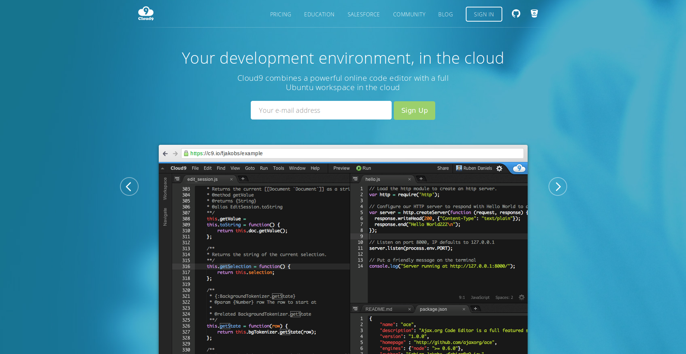
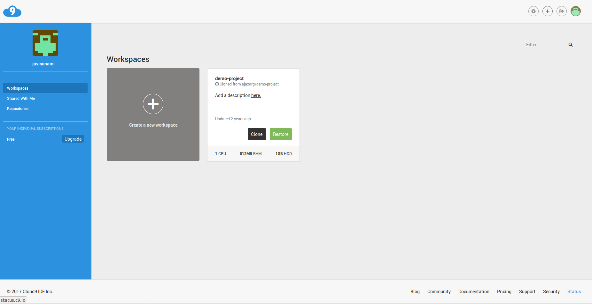
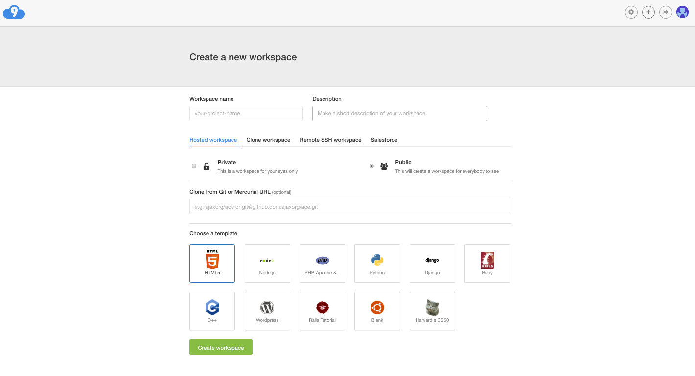
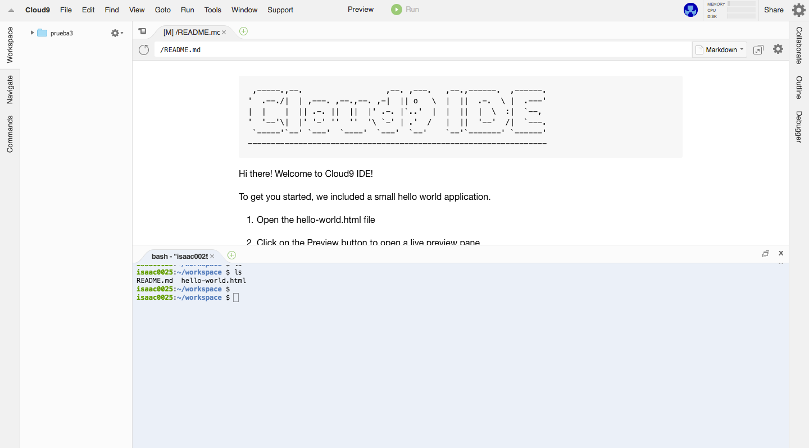

Cloud9
¿Qué es Cloud9?
Es un Integrated Development Environment (IDE) para desarrollo que tiene como plataforma la nube.
¿Cómo se utiliza Cloud9?
Lo primero que debemos hacer para utilizar Cloud9 es crearnos una cuenta. Para ello vamos a su página oficial . 
Una vez que hemos creado la cuenta veremos una ventana como la siguiente:

A continuación, para poder empezar a trabajar, es necesario crear un espacio de trabajo. Para ello vamos a la pestaña Create a new workspace.
Las opciones básicas de configuración del workspace nos permiten establecerlo como privado o público y elegir una plantilla.

Workspace
El workspace se corresponde con nuestra área de trabajo. En ella, tal y como se puede apreciar en la siguiente imagen, podemos crear documentos, carpetas, abrir ficheros e incluso una terminal.

El sistema operativo que usa Cloud9 es Ubuntu 14.04.5 LTS, tal y como podemos apreciar al ejecutar el comando lsb_release -d. Es por ello que
desde la terminal podemos ejecutar todos los comandos propios de esta distribución de Linux, así como instalar
programas a través de su gestor de paquetes.